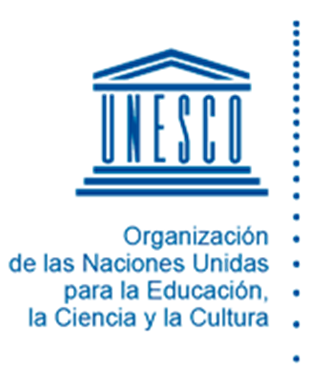

2. Documento Xochimilco o Documento Villarreal
La UNESCO señala algunas de las características que permean la segunda década del siglo XXI y que enmarcan hoy a la Universidad:

“Interconexión, interdependencia cada vez mayor, intensificación de la globalización económica y crecimiento del subempleo, gran desempleo juvenil, trabajo precario, cada vez mayor desigualdad entre países y también al interior de los mismos. Crecimiento demográfico, mayor urbanización y abandono del campo; y graves daños ecológicos. Terrorismo, violencia creciente tanto al interior de las familias como en lo social; progreso enorme de las tecnologías móviles, de conexión a internet que también modifican los modelos de participación social, cívica y política son algunos de los signos que dan marco al trabajo universitario.” (UNESCO, 2015).